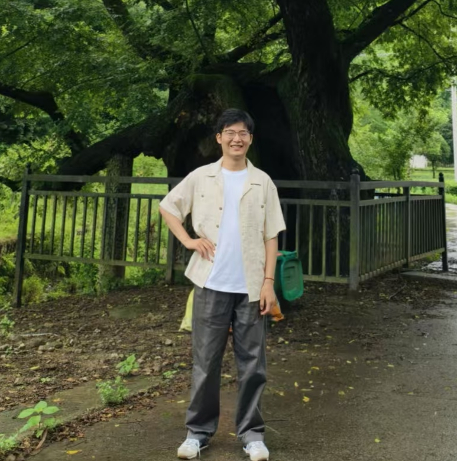

 |
RUIYANG XU (徐瑞阳)
PhD Student
Software Engineering Institute, East China Normal University, China
E-mail: xry@stu.ecnu.edu.cn (work) / xury106443@gmail.com (personal)
Motto: Always look on the bright side of life.
|
[About Me]
[Education]
[Selected Publications]
[Work Experience]
About Me
Ruiyang Xu is a third-year PhD student supervised by Prof. Ting Su at East China Normal University. His research focuses on validating critical industrial systems using effective methodologies.
Education
Selected Publications
- Property-Based Testing of Wafer Handling Robots via Model-Based Planning and Fuzzing
- Ruiyang Xu, Jingjing Liang*, Guoyue Zheng, Geguang Pu, Ting Su*
- ASE 2026, pdf, tool
- * Corresponding Author
[Full publication list]
Work Experience
- Aug 2025 - Present. Intern at Shanghai Micro Electronics Equipment (SMEE)
- Sep 2024 - Dec 2024, Sep 2025 - Dec 2025. Teaching Assistant in Software Analysis, Testing and Verification
- May 2023 - May 2024. Huawei Research Project ("Slicing Code Simulation Verification Technology")
- Working on symbolic execution, fuzzing and SMT solvers
[Back to Top]
Last updated on 2026-07-29